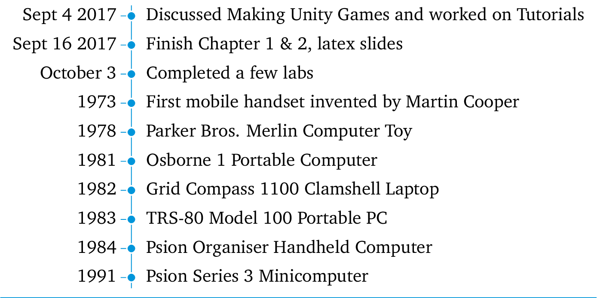

\documentclass{standalone}
\usepackage[T1]{fontenc}
\usepackage[utf8]{inputenc}
\usepackage{charter}
\usepackage{environ}
\usepackage{tikz}
\usetikzlibrary{calc,matrix}
% code by Andrew:
% http://tex.stackexchange.com/a/28452/13304
\makeatletter
\let\matamp=&
\catcode`\&=13
\makeatletter
\def&{\iftikz@is@matrix
\pgfmatrixnextcell
\else
\matamp
\fi}
\makeatother
\newcounter{lines}
\def\endlr{\stepcounter{lines}\\}
\newcounter{vtml}
\setcounter{vtml}{0}
\newif\ifvtimelinetitle
\newif\ifvtimebottomline
\tikzset{description/.style={
column 2/.append style={#1}
},
timeline color/.store in=\vtmlcolor,
timeline color=red!80!black,
timeline color st/.style={fill=\vtmlcolor,draw=\vtmlcolor},
use timeline header/.is if=vtimelinetitle,
use timeline header=false,
add bottom line/.is if=vtimebottomline,
add bottom line=false,
timeline title/.store in=\vtimelinetitle,
timeline title={},
line offset/.store in=\lineoffset,
line offset=4pt,
}
\NewEnviron{vtimeline}[1][]{%
\setcounter{lines}{1}%
\stepcounter{vtml}%
\begin{tikzpicture}[column 1/.style={anchor=east},
column 2/.style={anchor=west},
text depth=0pt,text height=1ex,
row sep=1ex,
column sep=1em,
#1
]
\matrix(vtimeline\thevtml)[matrix of nodes]{\BODY};
\pgfmathtruncatemacro\endmtx{\thelines-1}
\path[timeline color st]
($(vtimeline\thevtml-1-1.north east)!0.5!(vtimeline\thevtml-1-2.north west)$)--
($(vtimeline\thevtml-\endmtx-1.south east)!0.5!(vtimeline\thevtml-\endmtx-2.south west)$);
\foreach \x in {1,...,\endmtx}{
\node[circle,timeline color st, inner sep=0.15pt, draw=white, thick]
(vtimeline\thevtml-c-\x) at
($(vtimeline\thevtml-\x-1.east)!0.5!(vtimeline\thevtml-\x-2.west)$){};
\draw[timeline color st](vtimeline\thevtml-c-\x.west)--++(-3pt,0);
}
\ifvtimelinetitle%
\draw[timeline color st]([yshift=\lineoffset]vtimeline\thevtml.north west)--
([yshift=\lineoffset]vtimeline\thevtml.north east);
\node[anchor=west,yshift=16pt,font=\large]
at (vtimeline\thevtml-1-1.north west)
{\textsc{Timeline \thevtml}: \textit{\vtimelinetitle}};
\else%
\relax%
\fi%
\ifvtimebottomline%
\draw[timeline color st]([yshift=-\lineoffset]vtimeline\thevtml.south west)--
([yshift=-\lineoffset]vtimeline\thevtml.south east);
\else%
\relax%
\fi%
\end{tikzpicture}
}
\begin{document}
\begin{vtimeline}[timeline color=cyan!80!blue, add bottom line, line offset=2pt]
Sept 4 2017 & Discussed Making Unity Games and worked on Tutorials \endlr
Sept 16 2017 & Finish Chapter 1 \& 2, latex slides \endlr
October 3 & Completed a few labs \endlr
1973 & First mobile handset invented by Martin Cooper\endlr
1978 & Parker Bros. Merlin Computer Toy\endlr
1981 & Osborne 1 Portable Computer\endlr
1982 & Grid Compass 1100 Clamshell Laptop\endlr
1983 & TRS-80 Model 100 Portable PC\endlr
1984 & Psion Organiser Handheld Computer\endlr
1991 & Psion Series 3 Minicomputer\endlr
\end{vtimeline}
\end{document}